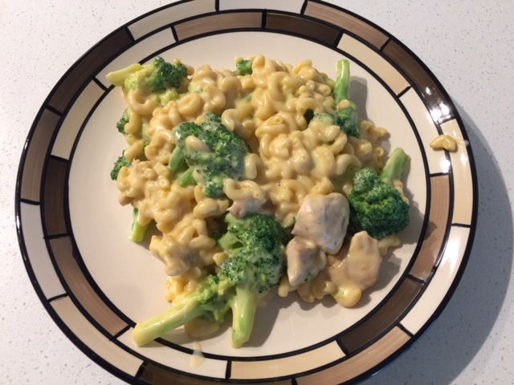

The Cheese Sauce is Liquid Gold
Cheesy Macaroni (⏰: 40 minutes)
← Back to Recipe Index 🍽

Ingredients:
- 3 Tbsp Butter/Margarine
- 3 Tbsp Flour
- 3/4 Tsp Salt
- 1/4 Tsp Pepper
- 500mL 6% Cream
- 1 Cup Cheddar Cheese
- 1 Cup Valveeta Cheese
- 1 Box (375g) Macaroni Noodles
- OPTIONAL: 2 Chicken Breasts
- OPTIONAL: 1 Broccoli Crown
Preparation:
- Shred Cheddar Cheese
- Cut the Valveeta Cheese into Small Cubes
- Wash and Cut Broccoli into Florets
Directions:
- Cut the checken breasts into small pieces and add to a pan. Add pepper if desired. Cook chicken on medium heat until it is no longer pink. (10-15 minutes)
- To a medium pot, add the butter/margarine, flour, salt, and pepper. Turn the pot onto medium-low heat and whisk frequently until the butter/margarine is melted and a homogeneous roux is formed.
- Add cream to pot and whisk. Turn heat up to medium. Whisk frequently to prevent the roux/cream from sticking to the bottom of the pot and burning. Continue until mixture is boiling. (15-25 minutes)
- Meanwhile, cook macaroni according to package directions. Drain and return to pot. If adding broccoli, add florets to the water 2-3 minutes before the macaroni is done.
- Once the sauce is boiling, remove from heat and add cheeses. Whisk until homogeneous. If sauce is not warm enough to melt the cheese, use medium-low heat to assist in the melting process. (5-10 minutes)
- Add cheese sauce to macaroni noodles (and broccoli and chicken) and stir. Enjoy!
← Back to Recipe Index 🍽